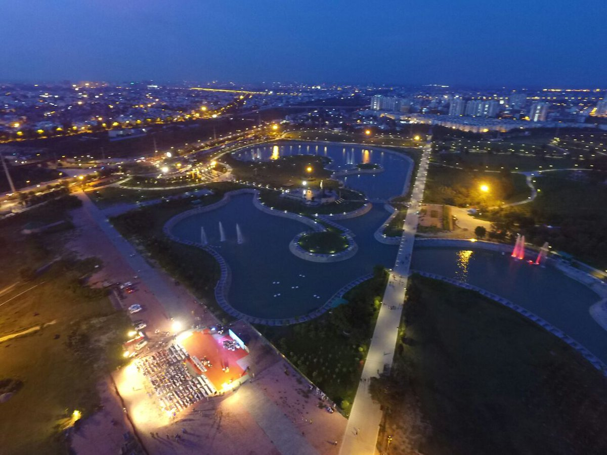

- New Delhi
New Delhi is best known as the location of India's national government.
New Delhi has great historical significance as it was home to powerful people, such as the Pāṇḍavas and the Mughals. The city has many historical monuments and tourist attractions as well as lively marketplaces and great food, such as chaat.
- Chandigarh

Haryana emerged as a separate State in the federal galaxy of the Indian Republic on November 1,1966.
With just 1.37% of the total geographical area and less than 2% of India's population,
Haryana has carved a place of distinction for itself during the past three decades
- Jaipur
Some of the most famous handicrafts of Jaipur include lacquer work, metalwork,
miniature painting, marble handicrafts,
textiles, and wood carvings.
Come let's explore the best places to buy these lovely pieces of handicrafts.
- Gandhinagar

Gandhinagar has been named after Mahatma Gandhi, the Father of the Nation. The grand Akshardham Temple,
built with 6,000 tonne of pink sandstone lies at the heart of the city and is the most prominent temple of the sect in the region.
- Mumbai

Mumbai (also known as Bombay, the official name until 1995) is the capital city of the Indian state of Maharashtra.
Mumbai lies on the Konkan coast on the west coast of India and has a deep natural harbour. In 2008, Mumbai was named an alpha world city
- Lucknow 
The name of Lucknow city can be traced back to the epic 'Ramayana'. When Lord Rama returned to Ayodhya, after 14 years of exile he gifted this place to his younger brother Lakshman,
who is believed to have stayed in Lakshman Teela, a high ground on the banks of the river Gomti